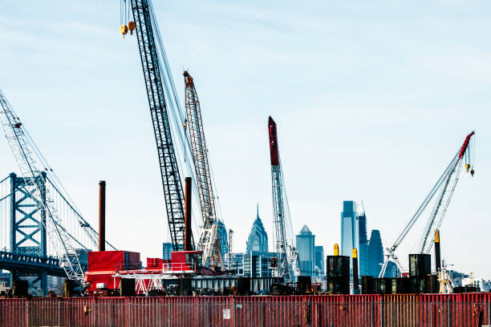

Philadelphia's Building Boom: Navigating Competition and Growth in the City's Skyline
Philadelphia's skyline is experiencing a renaissance, marked by a surge in construction projects that have transformed the city's urban fabric. However, this boom has led to an unexpected consequence: heightened competition among developers vying for tenants in an increasingly crowded market.
The city's building spree has resulted in a glut of apartments, with new residential complexes seemingly springing up on every corner. From sleek high-rises to trendy loft conversions, the abundance of options has created a competitive landscape where developers must vie for the attention of prospective tenants.
As a result, developers are being forced to innovate and differentiate their properties to stand out in a crowded market. Amenities once considered luxuries, such as rooftop lounges, fitness centers, and pet-friendly policies, have become standard offerings as developers seek to attract discerning renters.
Moreover, the influx of new apartments has put downward pressure on rental prices in some neighborhoods, as landlords compete to fill vacancies in their buildings. While this may be good news for renters, it poses challenges for developers seeking to recoup their investment and turn a profit on their projects.
Despite these challenges, Philadelphia's building boom shows no signs of slowing down. Developers continue to break ground on new projects, confident in the city's long-term growth prospects and the enduring appeal of urban living.
Ultimately, the proliferation of apartments in Philadelphia underscores the city's status as a vibrant and desirable place to live. As developers navigate the competitive landscape, tenants stand to benefit from an abundance of housing options and competitive rental prices, ensuring that Philadelphia remains an attractive destination for years to come.
With the construction boom in full swing, Philadelphia's skyline is undergoing a remarkable transformation. Cranes dot the horizon as new buildings rise, reshaping the city's silhouette and adding a modern flair to its historic streets.
The surge in construction activity has been fueled by a variety of factors, including strong demand for urban living, favorable economic conditions, and government incentives aimed at spurring development. As a result, developers are seizing the opportunity to capitalize on the city's growth and invest in projects that promise to redefine its built environment.
One consequence of this building boom is a saturation of the rental market, particularly in certain neighborhoods where new apartment buildings seem to be cropping up on every block. This oversupply has led to increased competition among developers, who must now work harder to attract tenants and fill their units.
In response to this heightened competition, developers are pulling out all the stops to differentiate their properties and appeal to prospective renters. This has led to an arms race of sorts, with developers offering an array of amenities and perks designed to lure tenants away from the competition.
From rooftop pools and fitness centers to pet-friendly policies and concierge services, developers are sparing no expense in their quest to stand out in a crowded market. These amenities not only enhance the living experience for residents but also serve as marketing tools to attract new tenants.
Despite the challenges posed by oversupply, developers remain optimistic about Philadelphia's long-term prospects and continue to invest in new projects. The city's vibrant culture, diverse neighborhoods, and rich history make it an attractive destination for residents and businesses alike, driving demand for new housing and commercial space.
Philadelphia's strong job market and growing population bode well for the future of its real estate market, providing developers with confidence that their investments will pay off in the years to come.
In the midst of this building frenzy, some experts caution that developers may need to exercise caution to avoid oversaturating the market further. While demand for urban living remains strong, there is a limit to how many new apartments the city can absorb without risking a downturn in rents and property values.
Philadelphia's building boom shows no signs of slowing down, with developers forging ahead with ambitious projects that promise to reshape the city's skyline for years to come. As the construction cranes continue to rise, Philadelphia's status as a dynamic and thriving metropolis is more apparent than ever.